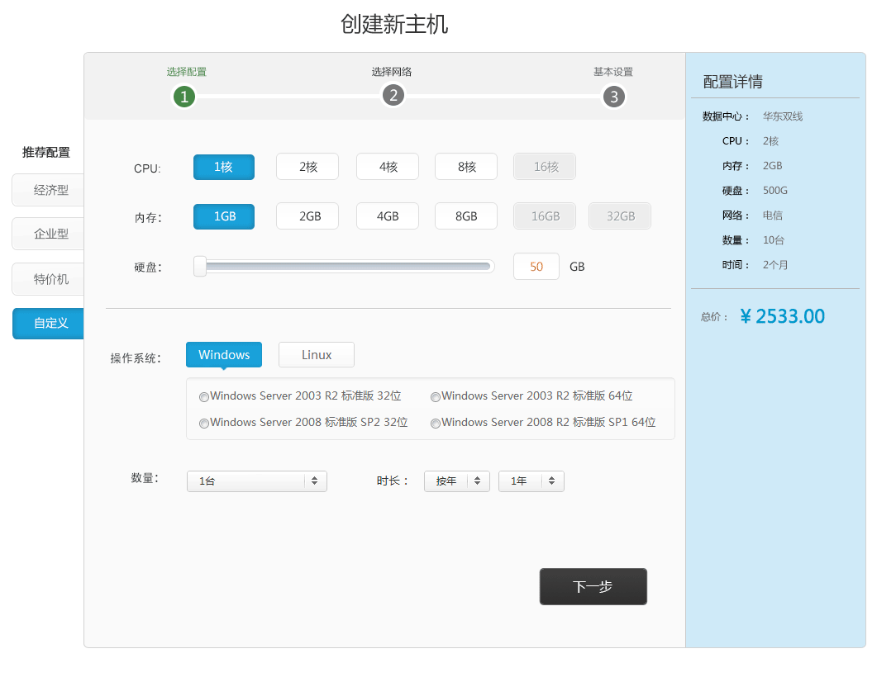
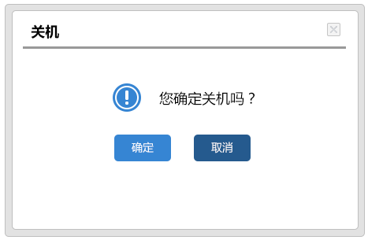
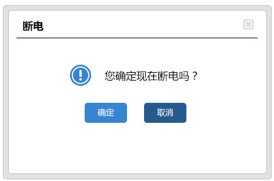
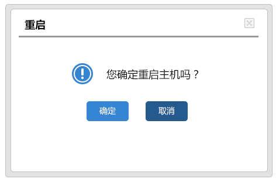
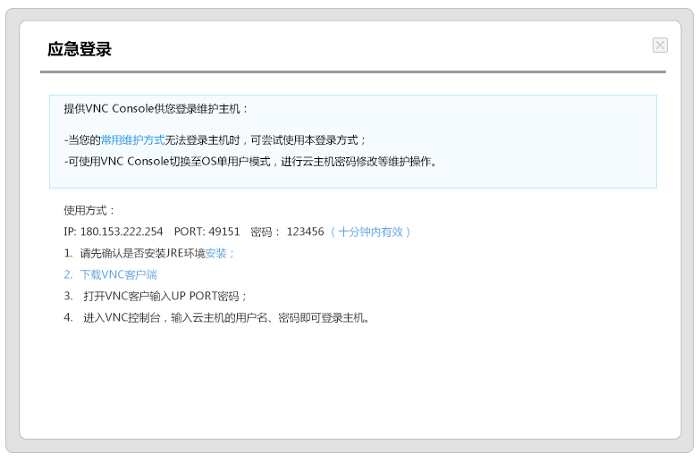

产品说明手册
云主机
创建主机
点击云主机界面创建主机按钮，在弹出的选择页面中，可选择云主机的机型、镜像、数量和网络接入需求、计费方式，页面右侧可以根据选择计费方式排列出您的主机配置和账户余额等信息，并根据您的选择统计费用：

操作
对于您的每一台主机，都可以进行常规的开机、关机、重启、应急登陆等基本操作。这些操作都支持批量处理。
· 关机

· 断电

· 重启

· 应急登陆
通过“应急登录”登录主机

FAQ
我如何使自己的多台云服务器之间的数据同步？
可以通过一些工具来实现服务器之间的数据同步，例如rsync等等，具体的方法及选择可通过详细沟通后，根据实际情况另作定论。
在控制面板中设置的防火墙，是映射到了系统中的iptables么？
这个是单独的防火墙，和用户系统中的iptables是不一样的。我们建议用户使用后台的防火墙，和iptables实现的效果是一样的，而且操作方便。
本地盘的IO性能怎么样？
高于7.2k sata raid1，接近sas 10k。
怎么将文件迁移到云主机呢？
在原服务器本地打包，然后使用scp或者ftp等方式传输到云主机。 数据量太大可以刻dvd或者copy到移动硬盘寄给我们。